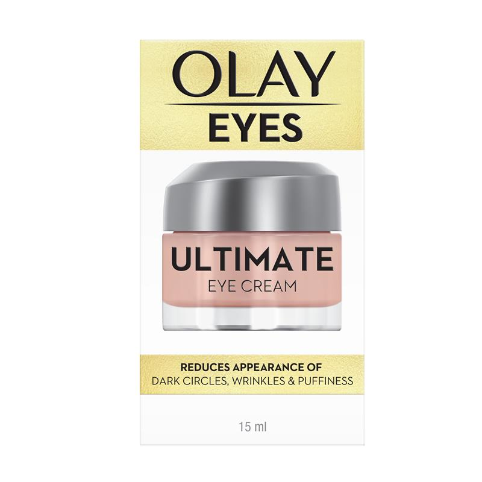

Olay
Olay Eyes Ultimate Eye Cream 15ml
Ingredient Analysis (27 ingredients)
Safe
Crosslinked silicone elastomer. Inert silicone structure safe for Malassezia-prone skin.
Safe
Synthetic hydrocarbon emollient. Not a fatty acid - it's an alkane without ester/acid bonds. Safe for Malassezia.
Avoid - feeds Malassezia
Ester of isostearic acid (C18 branched fatty acid). Malassezia can hydrolyze esters to access the fatty acid. Highly comedogenic.
Possibly problematic
C18 fatty alcohol. Not a direct Malassezia food source. Similar to cetyl alcohol in safety profile.
Possibly problematic
C16 fatty alcohol. Not a direct Malassezia food source, but may create conditions for growth. Generally considered lower risk than esters.
Safe
Mineral sunscreen filter. Inorganic mineral pigment. Cannot feed Malassezia. Preferred sunscreen option for seb-derm.
Possibly problematic
C22 fatty alcohol. Long-chain, not a direct Malassezia food. Similar to other fatty alcohols.
Safe
Synthetic hydrocarbon. Not a fatty acid or ester - paraffins are alkanes without carboxylic acid groups. Safe for Malassezia.
Safe
Aromatic alcohol preservative. NOT a fatty alcohol despite the name. Safe for Malassezia.
Safe
Preservative in the paraben family. Has antifungal properties. Safe for Malassezia-prone skin.
Likely problematic
PEGylated stearic acid ester. Contains C18 stearic acid which can be problematic, though PEGylation may reduce bioavailability to yeast.
Safe
Silicone polymer. Safe for Malassezia - not a lipid or fatty acid that yeast can metabolize. Provides skin smoothing and protection.
Safe
Preservative with antifungal properties. Actually inhibits Malassezia growth rather than feeding it. Safe for seb-derm.
Safe
Preservative with antifungal properties. Shows enhanced effectiveness against fungi. Safe for Malassezia-prone skin.
Possibly problematic
Fatty alcohol (C16-C18 mix). Not a direct Malassezia food, but Dobler et al study showed some growth with cetylstearyl alcohol. Use with caution.
Possibly problematic
Emulsifier combining cetearyl alcohol with glucose. The fatty alcohol portion may be of some concern.
Possibly problematic
Ethoxylated lauryl alcohol surfactant. Derived from lauryl (C12). Some acne databases list as potentially problematic. Use with caution.
Avoid - feeds Malassezia
C16 fatty acid. Within the C11-C24 range. Particularly problematic - used in labs to induce Malassezia growth.
Avoid - feeds Malassezia
C18 fatty acid. Within the C11-C24 range that Malassezia can metabolize. Directly feeds Malassezia yeast.
Possibly problematic
Matrixyl - peptide attached to palmitic acid (C16). The C16 fatty acid portion may be metabolized by Malassezia.